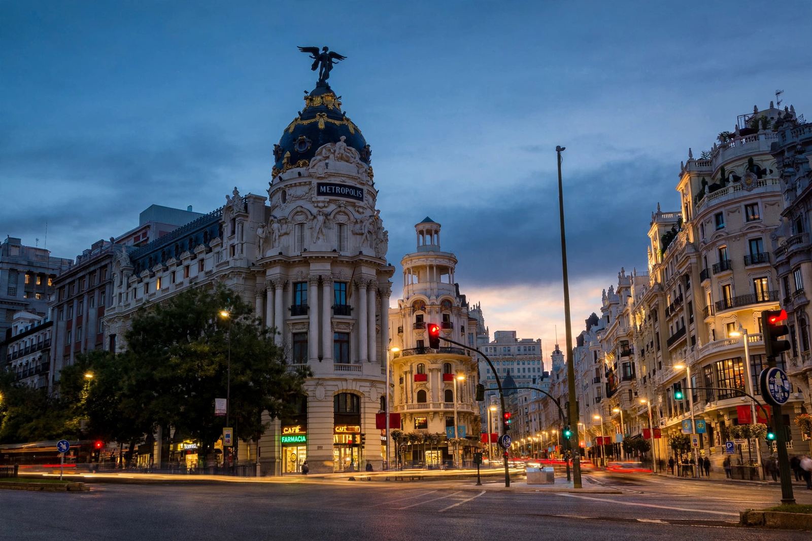

Madrid
Madrid es la capital y ciudad más poblada de España, con más de tres millones de habitantes. El artículo en español trata su historia, desde su fundación en época andalusí hasta convertirse en capital del reino, así como su geografía, clima, cultura y transporte.

[Image: La Gran Vía de Madrid al atardecer]
Lugares de interés
La Puerta del Sol, la Plaza Mayor, el Palacio Real, el Museo del Prado, el Parque del Retiro y la Gran Vía son algunos de sus símbolos más conocidos.